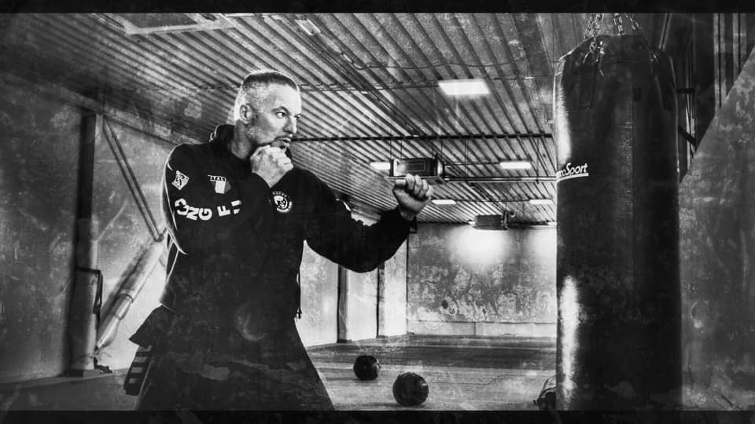
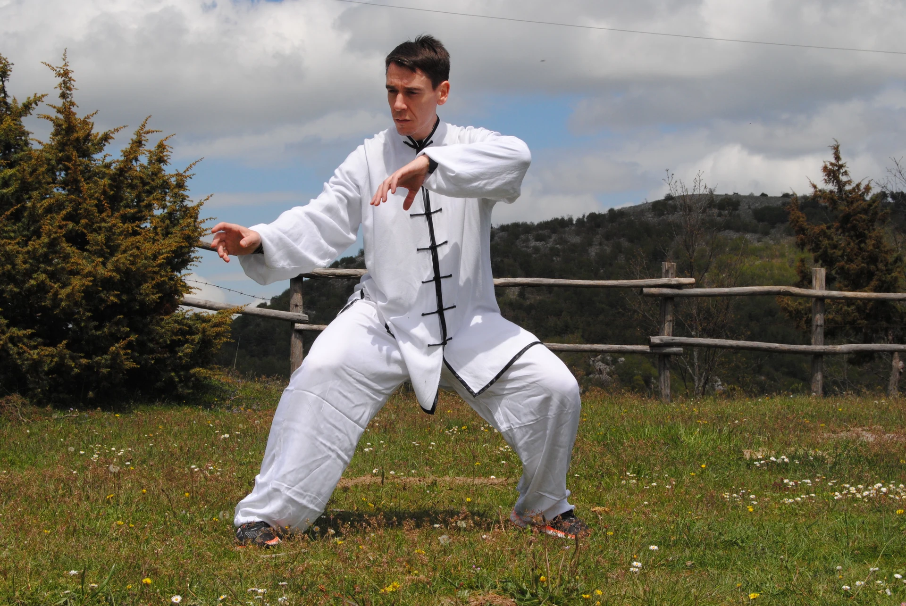
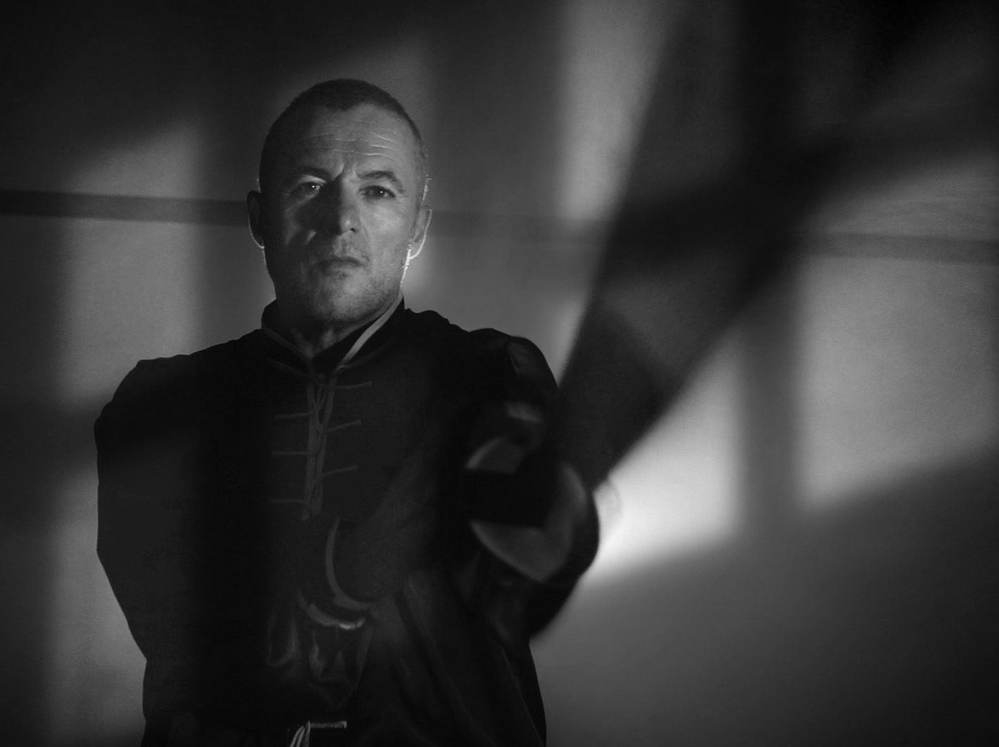
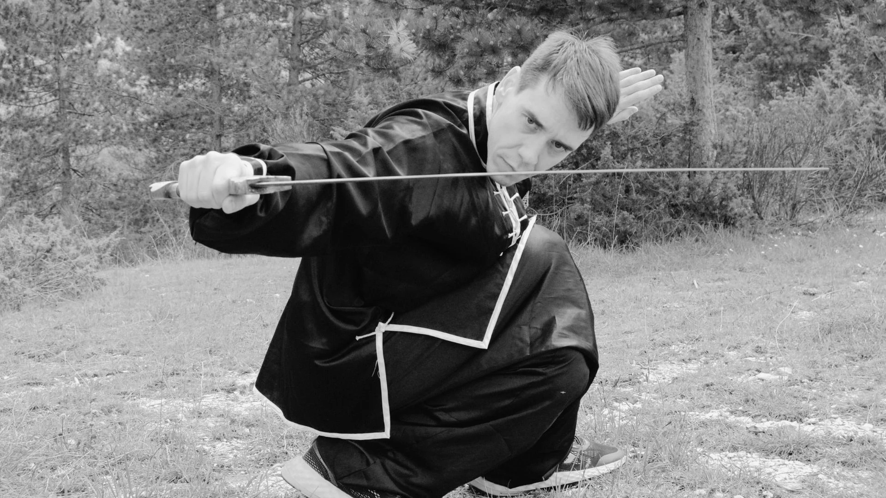
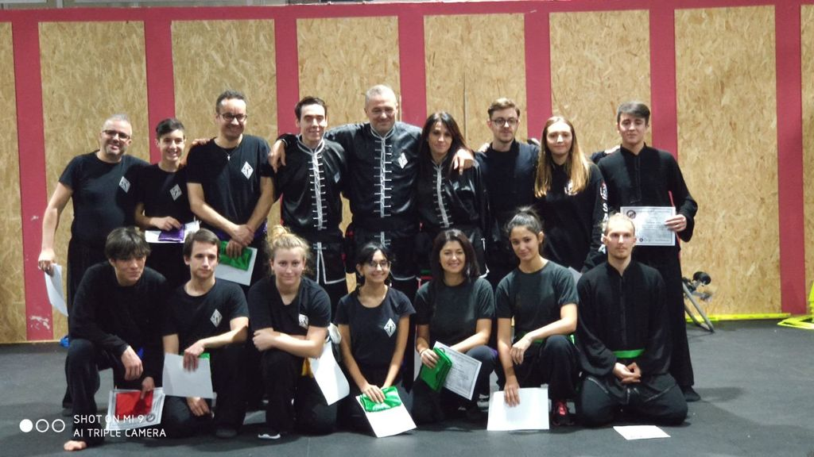

TRADIZIONE
TRADIZIONEHUNG GAR
01Tecnica, forme e carattere. Il Kung Fu tradizionale, con percorsi per adulti e bambini.
Scopri il corso
TERNI, UMBRIA · ARTI MARZIALI CINESI
Kung Fu, Sanda e Tai Chi a Terni.
Corsi per adulti e bambini alla Palestra Privilege.
40+ANNI DI ESPERIENZA
NELLE ARTI MARZIALI
TRADIZIONE HUNG GAR
UNA SCUOLA, PIÙ PERCORSI
PALESTRA PRIVILEGE
TERNI, VIA A. M. ANGELINI 8
01 / IL TUO PERCORSO
Hung Gar, Sanda, Tai Chi e propedeutica.
Percorsi diversi per età e interessi,
da conoscere con i maestri.
TRADIZIONETecnica, forme e carattere. Il Kung Fu tradizionale, con percorsi per adulti e bambini.
Scopri il corsoCalci, pugni e proiezioni. Preparazione e confronto nella boxe cinese, anche con Kids Sanda.
Scopri il corso
EQUILIBRIOAscolto, respiro e movimento. Una pratica che invita a rallentare e ritrovare il proprio equilibrio.
Scopri il corsoI primi passi nelle arti marziali. Un percorso dedicato ai più piccoli, da conoscere insieme ai maestri.
Parliamone insieme02 / CHI TI ACCOMPAGNA
I maestri dell’Accademia Shaolin di Terni.
Qui trovi la loro esperienza,
le qualifiche e la storia nella scuola.

SHIFU / MAESTROQuarant’anni di esperienza e un legame diretto con il Maestro Maurizio Zanetti e la famiglia del Maestro Tang. Tradizione Hung Gar e difesa personale.
La sua storia
SHIFU / MAESTROIn accademia dal 2001. Maestro di Hung Gar, Sanda, Tai Chi e Qigong, arbitro internazionale e responsabile organizzativo della scuola.
La sua storia
03 / LO SPIRITO DELL’ACCADEMIA
«Dai sempre il massimo e combatti per quello in cui credi.»SHIFU LUCA PRIMAVERAConosci la nostra scuola



DUE LEZIONI DI PROVA
Contatta i maestri per scegliere il corso e concordare il giorno.
Prima della prova ti indicheranno cosa portare e i moduli da compilare.
Sì. Raccontaci cosa cerchi: la prova è l’occasione per conoscere i maestri, scoprire le discipline e scegliere il percorso con loro.
La scuola prevede due lezioni di prova, previa compilazione del modulo di scarico responsabilità da parte dell’atleta o del genitore per i minorenni. Contattaci per concordare il giorno e sapere cosa portare.
Prima di venire, chiedi ai maestri quale abbigliamento e quale documentazione servono per il corso scelto. Per un minore, concorda con loro anche la compilazione dei moduli da parte del genitore.
Alla Palestra Privilege, in via Arnaldo Maria Angelini 8, 05100 Terni. Apri le indicazioni ↗